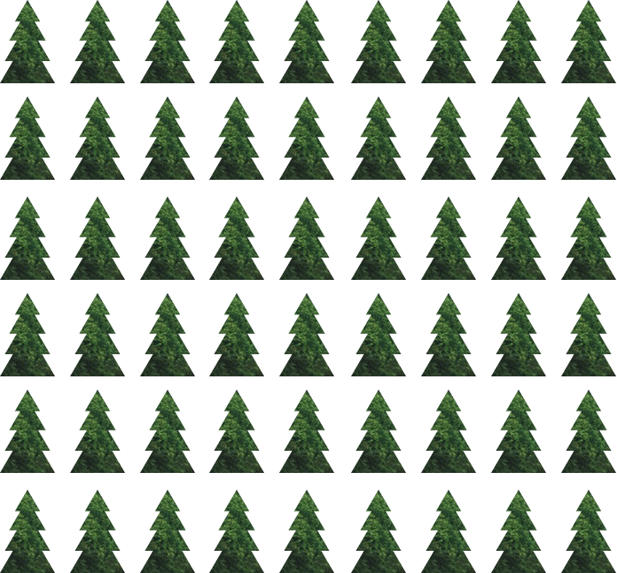
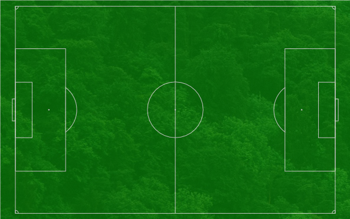

<!DOCTYPE html>
<!-- saved from url=(0046)file:///Users/Stina/Desktop/skogen/index.html# -->
<html><head><meta http-equiv="Content-Type" content="text/html; charset=UTF-8">
    <meta charset="utf-8">
    <title>Skogen</title>
    <link rel="stylesheet" href="./Skogen_files/normalize.css">
    <link rel="stylesheet" media="screen" href="./Skogen_files/bootstrap.min.css">
    <link href="./Skogen_files/css" rel="stylesheet" type="text/css">
    <link rel="stylesheet" href="./Skogen_files/styles.css">
  </head>
  <body>

    <!-- <section class="start">
        <h1 class="text-center">Kliv in i skogen.</h1>
        <div class="row row-centered container text-center">
          <a href="" class="glyphicon glyphicon-menu-down"></a>
        </div>
    </section> -->

    <main class="container-fluid">

      <section class="love_trees">

        <div class="row row-centered">
          <h2 class="text-center">5 anledningar att älska skogen</h2>
        </div>
        <div class="row row-centered container center-block leaves">
          <ul class="text-center list-inline">
            <li><a href="./Skogen_files/Skogen.html">1.</a></li>
            <li><a href="./Skogen_files/Skogen.html">2.</a></li>
            <li><a href="./Skogen_files/Skogen.html">3.</a></li>
            <li><a href="./Skogen_files/Skogen.html">4.</a></li>
            <li><a href="./Skogen_files/Skogen.html">5.</a></li>
          </ul>
        </div>

        <div class="row row-centered container center-block tree_facts" style="display: block;">
          <ul class="text-center list-inline">
            <li style="visibility: visible;">Skogen är jordens lungor. Den renar vår luft och vårt vatten och ger oss syre.</li>
            <li>Skogen skyddar marken mot jorderosion och bryter ned avfall och skadliga ämnen.</li>
            <li>Skogen stabiliserar klimatet genom att binda stora mängder koldioxiod.</li>
            <li>9 av 10 landdjur lever i skogen.</li>
            <li>Att vara ute i skogen gör att vi mår bättre och minskar risken för sjukdomar.</li>
          </ul>
        </div>


      </section>


      <section class="forest_gone">
        <div class="row row-centered container">
          <div class="col-sm-5"></div>
          <div class="text col-sm-5 col-sm-offset-1">
          <p>Ungefär hälften av jordens ursprungliga skogar har försvunnit.</p>
          <p class="forest_second">Det mesta har skett under de senaste 50 åren.</p>
          <p class="year second-year btn btn-success btn-lg btn-block center-block">2015</p>
          </div>
        </div>
      </section>

      <section class="football-field">
        <div class="row row-centered container">
          <div class="col-sm-5"></div>
          <div class="text col-sm-5 col-sm-offset-1">
            <p>Hur många fotbollsplaner med träd huggs ner varje minut?</p>
            <div class="alternatives text-center">
            <a href="" class="btn btn-success btn-lg">16</a>
            <a href="" class="btn btn-success btn-lg">26</a>
            <a href="" class="btn btn-success btn-lg">36</a>
            </div>
          </div>
        </div>
      </section>

      <section class="deforestation">
        <div class="row row-centered container">
          <div class="text col-sm-4 col-sm-offset-4 text-center">
            <p>20 %</p>
            <p>av våra koldioxidutsläpp beror på avskogning.</p>
            <a href="" class="btn btn-default btn-lg">Så kan vi minska effekterna</a>
          </div>
        </div>
      </section>

      <section class="preserve-forest">
        <div class="row row-centered container">
          <div class="text col-sm-4 col-sm-offset-4 text-center">
          <p>Genom att bevara jordens artrika skogar kan vi minska klimatförändringarna.</p>
          </div>
        </div>
      </section>

      <section class="save-trees">
        <div class="row row-centered">
          <h2 class="text-center">Vad kan du göra för att rädda träd?</h2>
        </div>
        <div class="row row-centered container center-block flip-container">
            <div class="flip-cards center-block">
              <div class="col-md-3 col-sm-6 front-card">
                <p>Återvinn papper</p>
              </div>
              <div class="col-md-3 col-sm-6 reverse-card">
                <p>Lämna allt papper till återvinningen och köp återvunna produkter.</p>
              </div>
          </div>
          <div class="flip-cards">
              <div class="col-md-3 col-sm-6 front-card">
                <p>Använd mindre papper</p>
              </div>
              <div class="col-md-3 col-sm-6 reverse-card">
                <p>Skriv inte ut i onödan, tacka nej till reklam i brevlådan.</p>
              </div>
          </div>
          <div class="flip-cards">
              <div class="col-md-3 col-sm-6 front-card">
                <p>Plantera träd</p>
              </div>
              <div class="col-md-3 col-sm-6 reverse-card">
                <p>Plantera träd själv eller stötta en organisation som gör det.</p>
              </div>
          </div>
          <div class="flip-cards">
            <div class="col-md-3 col-sm-6 front-card">
              <p>Pressa politiker och företag</p>
            </div>
            <div class="col-md-3 col-sm-6 reverse-card politiker">
              <p>Skriv till en politiker, säg till i affären att du vill ha hållbara produkter.</p>
            </div>
          </div>
        </div>

      </section>

      <section class="organisations">
        <div class="row row-centered">
          <h2 class="text-center">Organisationer som arbetar för att rädda skog</h2>
        </div>
        <div class="row row-centered container center-block">
          <ul class="text-center">
            <li><a href="http://www.wwf.se/vrt-arbete/skog/1255316-skog-i-vrlden">Världsnaturfonden WWF</a></li>
            <li><a href="http://www.naturskyddsforeningen.se/vad-vi-gor/skog">Naturskyddsföreningen</a></li>
            <li><a href="http://www.greenpeace.org/sweden/se/skog/">Greenpeace</a></li>
            <li><a href="http://www.viskogen.se/">Vi-skogen</a></li>
            <li><a href="http://naturarvet.se/">Naturarvet</a></li>
          </ul>
        </div>

      </section>

      <section class="sources">
          <div class="row row-centered container">
            <h2 class="text-center">Källor:</h2>
            <ul class="text-center">
              <li><a href="http://www.wwf.se/vrt-arbete/skog/1255316-skog-i-vrlden">WWF</a></li>
              <li><a href="http://wwf.panda.org/about_our_earth/deforestation/">Panda.org</a></li>
              <li><a href="https://www.treepeople.org/resources/tree-benefits">Treepeople.org</a></li>
              <li><a href="http://www.greenpeace.org/sweden/se/skog/">Greenpeace</a></li>
            </ul>
          </div>
      </section>

    </main>

    <script src="./Skogen_files/jquery-1.11.3.js"></script>
    <script src="./Skogen_files/bootstrap.min.js"></script>
      <script src="./Skogen_files/custom.js"></script>
  

</body></html>